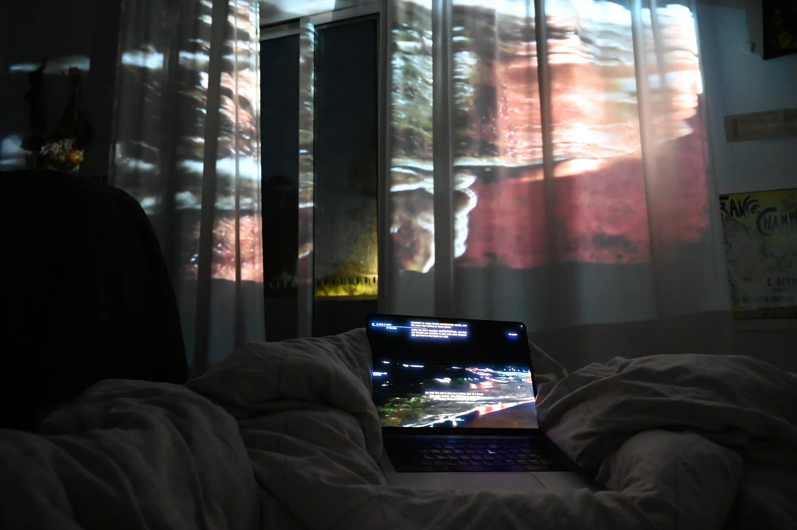
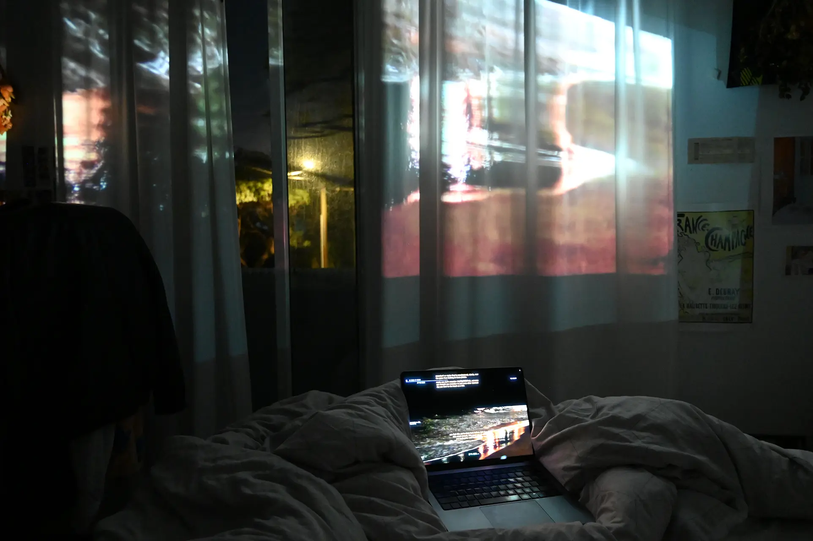
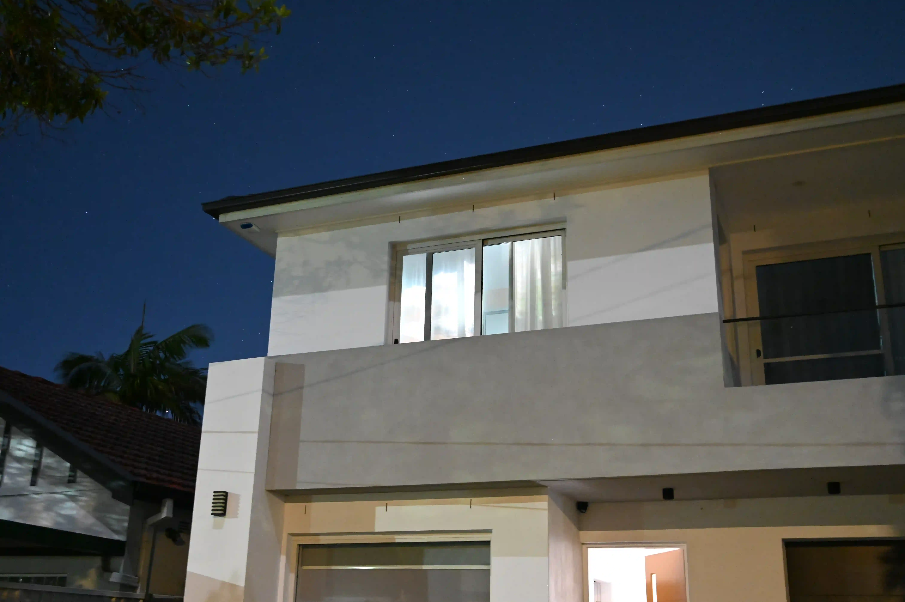
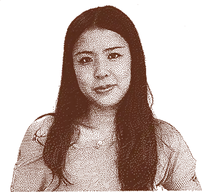

An Index of Memory



Sophie Zhang is a Sydney/Eora-based designer passionate about creative code, web design and visual storytelling. Her design practice spanning across digital and print media is curious, expressive and sentimental.

Instagram @bonesofsoup
Website(s) anindexofmemory.xyz sophiezhang.xyz
Project Synopsis
I alone have more memories than all men may have ever had since the world exists… My memory, sir, is like a rubbish heap.
Funes the Memorious
How are the ways we remember changed by new digital technologies? An Index of Memory is a narrative-led website that probes the liminality and weight of our digital memory.
Photos have long been a form of record-keeping, allowing us to document our memories, experiences and lives. Contemporary technologies and digital cultures from digi-cam photos to smartphone technology have expanded not only the sheer scale but also detail of our personal memory archives. The ways we remember with media are not the same.
Drawing from Vannevar Bush’s memex (1945) and Jorge Luis Borge’s Funes the Memorious (1942), I explore the consequences of this digital archive through a three-chapter structure. The speculative narrative is told from the positionality of a persona, ‘you’, who no longer remembers anything; it is through these records saved in the digital memory that you rediscover your past life. The system takes you through three chapters: the beach, the house, and finally the weight of the entire digital index, each illustrating a consequence of the digital memory.
An Index of Memory in its final form came to life through the experimental mediums of TouchDesigner and projection mapping. My process working with creative technology and visual storytelling became an exploration of how we can discuss and visualise these ideas about memory, liminal place, and digital archives. These ways of working are especially urgent today, with generative AI making it possible for photographic images to be manipulated and synthetically created to a greater degree than ever before. What then, are the implications of this for practices of remembering?